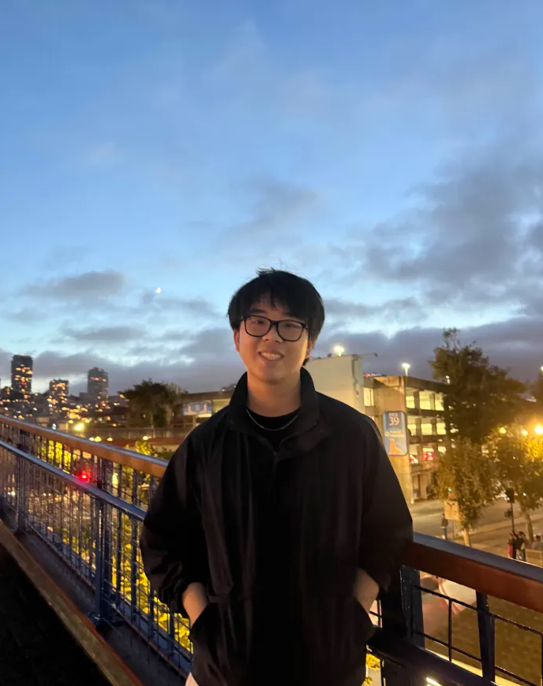

<!DOCTYPE html>
<html lang="en">
<head>
  <meta charset="UTF-8" />
  <meta name="viewport" content="width=device-width, initial-scale=1.0" />
  <title>Ivan Kuang | Mechanical Engineer Portfolio</title>
  <script src="https://cdn.tailwindcss.com"></script>
  <script>
    tailwind.config = {
      theme: {
        extend: {
          colors: { primary: '#3b82f6', secondary: '#64748b', dark: '#0f172a' },
          fontFamily: { sans: ['Inter', 'sans-serif'] },
          animation: {
            'blob': 'blob 7s infinite',
            'fade-in-up': 'fadeInUp 0.5s ease-out forwards',
            'fade-in': 'fadeIn 0.4s ease-out forwards',
          },
          keyframes: {
            blob: {
              '0%': { transform: 'translate(0px, 0px) scale(1)' },
              '33%': { transform: 'translate(30px, -50px) scale(1.1)' },
              '66%': { transform: 'translate(-20px, 20px) scale(0.9)' },
              '100%': { transform: 'translate(0px, 0px) scale(1)' },
            },
            fadeInUp: {
              '0%': { opacity: '0', transform: 'translateY(10px)' },
              '100%': { opacity: '1', transform: 'translateY(0)' },
            },
            fadeIn: {
              '0%': { opacity: '0', transform: 'translateY(20px)' },
              '100%': { opacity: '1', transform: 'translateY(0)' },
            },
          }
        },
      },
    }
  </script>
  <style>
    body { font-family: 'Inter', sans-serif; }
    .prose-detail p { margin-bottom: 1rem; line-height: 1.8; color: #374151; }
    .prose-detail h3 { font-size: 1.25rem; font-weight: 700; color: #111827; margin-top: 2rem; margin-bottom: 0.75rem; }
    .prose-detail ul { list-style: disc; padding-left: 1.5rem; margin-bottom: 1rem; }
    .prose-detail li { margin-bottom: 0.4rem; color: #374151; line-height: 1.7; }
  </style>
  <script src="https://unpkg.com/react@18/umd/react.development.js"></script>
  <script src="https://unpkg.com/react-dom@18/umd/react-dom.development.js"></script>
  <script src="https://unpkg.com/@babel/standalone/babel.min.js"></script>
</head>
<body class="bg-gray-50 text-gray-900 antialiased selection:bg-blue-100 selection:text-blue-900">
  <div id="root"></div>

  <script type="text/babel">
    const { useState, useEffect, useRef } = React;
    const { createRoot } = ReactDOM;

    // ─── CONFIG ───────────────────────────────────────────────────────────────
    const PROFILE_NAME   = "Ivan Kuang";
    const PROFILE_BIO    = `I am a Mechanical Engineering student at UC Berkeley, passionate about solving complex physical challenges. I am actively involved in high-performance engineering teams like CalSol (Solar Vehicle Racing) and STAR (Space Technology and Rocketry), where I design composite structures and aerospace components. Outside of the workshop, I enjoy F1 (McLaren fan), woodworking, and lion dance.`;
    const CONTACT_EMAIL  = "ivan.kuang12@berkeley.edu";
    const CONTACT_PHONE  = "626-609-8004";
    const LINKEDIN_URL   = "https://www.linkedin.com/in/ivan-kuang/";
    const RESUME         = "./pdfs/Resume_IvanKuang (1).pdf";

    // ─── PROJECTS ─────────────────────────────────────────────────────────────
    // For each project, fill in the `details` object with your write-up.
    // sections: array of { heading, body } — body is plain text or use \n for line breaks
    // extraImages: additional image paths shown in the detail page gallery
    const PROJECTS = [
      {
        id: '1',
        category: 'Academic Projects',
        title: 'Wind Turbine',
        description: 'Designed a wind tower under strict constraints (<17 in³ volume, 16" height) for a 9x9x9" 3D printer. The design successfully housed motors and turbine blades while minimizing deflection (9.63mm under 3.5kg load). Validated performance outputs of 0.5W power generation through physical testing.',
        tags: ['3D Printing', 'DfM', 'Simulation', 'Prototyping', 'Solidworks', 'FEA'],
        imageUrl: './images/Turbine1.png',
        link: './pdfs/E26 Lab Report.pdf',
        details: {
          overview: 'This was a semester-long project for Engineering 26 at UC Berkeley. The goal was to design, fabricate, and physically test a 3D-printed wind turbine system optimized for both power output and structural stiffness.',
          sections: [
            {
              heading: 'The Challenge',
              body: 'The design had to fit within strict constraints: less than 17 in³ of material, exactly 16" motor shaft height, and a 9×9×9" 3D printer build volume. This forced the tower to be printed in two halves and joined together.'
            },
            {
              heading: 'Rotor Design',
              body: 'After an extensive literature review, we settled on a 3-blade NACA 4412 airfoil profile with a ~7° angle of attack and 15° twist angle. The swept diameter was 5.9" to maximize energy capture. Blades were lofted in SolidWorks from three cross-sectional profiles and propagated using a circular pattern.'
            },
            {
              heading: 'Tower Design',
              body: 'The tower uses a triangular base that lofts into a spiraling truss upper section. Triangular cross-bracing was chosen for its stiffness-to-volume ratio. The two halves connect via tapered male/female pegs and were bonded with Loctite 435 ABS glue. Final volume: 15.92 in³.'
            },
            {
              heading: 'FEA & Structural Analysis',
              body: 'A 99,774-element solid mesh was run in SolidWorks Simulation with a 9.8N tip load. Max von Mises stress: 8.77 MPa (well below ABS yield of 20 MPa). Minimum FOS: 4.4. Predicted deflection at 1kg: 1.92mm.'
            },
            {
              heading: 'Testing Results',
              body: 'Power test at 25 mph: peak output of 0.5W at 1.45V, 335mA, 2683 RPM. Deflection test: 2.63mm at 1kg load (vs. 1.92mm predicted — 25% higher, likely due to FDM layer anisotropy). Tower stiffness: 3.55 N/mm. Stiffness-per-gram: 19.9 N/mm·kg.'
            },
            {
              heading: 'What I Learned',
              body: 'FEA assumes isotropic material, which FDM prints are not. Layer orientation relative to load direction significantly affects real-world stiffness. For the rotor, the hub thickness constrained our ability to implement the desired twist angle, limiting efficiency to 0.83% vs. the Betz limit of 59.3%. Future iterations would prioritize a hub redesign to allow greater twist.'
            },
          ]
        }
      },
      {
        id: '2',
        category: 'Competition & Awards',
        title: 'C.A.R.E. System',
        description: 'Designed a scalable material handling solution for semiconductor fabrication environments. The system focused on maneuverability, sensitive material containment, and precision handling constraints. This design won First Place in the ASME Cadathon for its efficiency, safety features, and innovative approach to material compatibility.',
        tags: ['Product Design', 'Material Handling', 'Award Winner', 'Solidworks', 'Onshape', 'FEA'],
        imageUrl: './images/Care1.png',
        link: './pdfs/Cadathon 2025  Group 3  C.A.R.E.pdf',
        details: {
          overview: 'C.A.R.E. (Cleanroom Automated Robot Entity) was designed in 12 hours for the 2025 ASME Cadathon and won First Place. The challenge: design a scalable material handling solution for ISO Class 1-5 semiconductor cleanroom environments.',
          sections: [
            {
              heading: 'The Problem',
              body: 'Semiconductor fabs handle sensitive wafers and components that are vulnerable to vibration, static discharge, and particulate contamination. Existing solutions are either extremely expensive (>$100k) or require human intervention that introduces contamination risk.'
            },
            {
              heading: 'The Cart',
              body: 'A 30"×18"×30" enclosed cart with polycarbonate magnetic-sealed doors and rubber outlines to prevent particle leakage. Mecanum wheels allow omnidirectional movement. A detachable handle enables manual operation as a fallback. FEA on the wheel connector (Al 7075) showed FOS > 800 under 50 lb load. Center of gravity: 12.1", which is low enough to prevent tipping.'
            },
            {
              heading: 'The Stabilizer',
              body: 'A 3-DOF kinematic platform using three NEMA 17 stepper motors and stainless steel pushrods to actively level the tray surface. Inspired by camera gimbals, a 3-point isolator layout forms a kinematic triangle under the tray. A PID loop driven by an IMU damps angular drift in real time. All materials are ESD-safe and cleanroom-compatible.'
            },
            {
              heading: 'The Robotic Arm',
              body: 'A 3-joint robotic arm with shaftless brushless DC motors and 1" OD fiberglass tubes (swapped from aluminum to reduce particle shedding). Joints are covered in Mylar for static discharge protection. A vacuum-tip end effector handles wafer pick-and-place. Reach was calculated geometrically to cover the full interior of the cart and extend to external workstations.'
            },
            {
              heading: 'Why It Won',
              body: 'The design hit 95% of commercial system functionality at under 5% of the cost (~$2,000 vs. $100,000+). The iterative CAD process from 2D layout sketches in GoodNotes → Onshape for collaboration → SolidWorks for FEA — was highlighted by judges as unusually rigorous for a 12-hour competition.'
            },
          ]
        }
      },
      {
        id: '3',
        category: 'Club & Team Projects',
        title: 'Airframe Structural Design',
        description: 'Developed protection strategies for external rocket hardware (wiring, pipes) against aerodynamic exposure. Implemented a chassis extension to replace a high-stress coupler on the Solid Demonstrator rocket, maximizing the structural Factor of Safety (FOS). Currently designing and analyzing Von Karman nose cones to minimize parasitic drag.',
        tags: ['Onshape', 'Structural Analysis', 'Solidworks FEA', 'Aerodynamics'],
        imageUrl: './images/STAR1.png',
        link: './pdfs/STAR12.pdf',
        details: {
          overview: 'As an Airframe Engineer on UC Berkeley\'s STAR (Space Technology and Rocketry) team, I work on the structural systems of the Solid Demonstrator rocket. This is a high-powered vehicle designed as a precursor to the primary flight vehicle.',
          sections: [
            {
              heading: 'Chassis Extension',
              body: 'The original design used a coupler to join airframe sections, which served as a known stress concentration point. I redesigned this as a continuous chassis extension modeled in Onshape and validated in SolidWorks FEA. I applied fixed boundary conditions on the bottom bolt ring and an 1100 lbf axial load at the top. The result was a factor of safety of approximately 4, which matched my hand calculations. I added chassis rings at every 1-foot interval to distribute axial loads and maintain tube alignment. I am currently working on further improvements to reduce overall weight while maximizing structural integrity.'
            },
            {
              heading: 'Airframe Runners',
              body: 'Wiring harnesses, pipes, and engine components that extend beyond the main body tube are vulnerable to aerodynamic loading and impact. I designed a two-part runner system: discrete internal L-brackets (high shear stiffness, mass-optimized over continuous rails) and a trapezoidal outer cover with a 15° angled profile that deflects shockwaves and maintains laminar flow. Assembly uses countersunk bolts for a smooth aerodynamic surface.'
            },
            {
              heading: 'Simulation Analysis',
              body: 'Impact load FEA: vertical descent simulation, peak stress 199.2 MPa within elastic limits. Vibration analysis: primary natural frequency at 1,749.3 Hz, which is well outside the engine-induced vibration range, preventing resonance failure. Fastener placement was optimized by mapping nodal regions in the vibration mode shapes to prevent loosening under cyclic loading.'
            },
            {
              heading: 'Current Work',
              body: 'Currently designing and analyzing Von Karman nose cone geometries to minimize parasitic drag on the primary flight vehicle. Also developing additional airframe protection strategies for avionics bays and external sensor packages.'
            },
          ]
        }
      },
      {
        id: '4',
        category: 'Club & Team Projects',
        title: 'Occupancy Cell — In Progress',
        description: 'Designed and developed the occupancy cell for the solar vehicle GEN XI. Currently developing a comprehensive manufacturing plan for the composite structure, including joining procedures, epoxy application, and clamping strategies. Researching materials and layup schedules to ensure structural integrity for the final assembly.',
        tags: ['Composites', 'Manufacturing', 'Automotive', 'Surface Modeling', 'TIG Welding', 'MIG Welding', 'Solidworks'],
        imageUrl: './images/calsol1.png',
        link: '#',
        details: {
          overview: 'As a Chassis Engineer on CalSol (UC Berkeley\'s Solar Vehicle Racing team), I am designing and manufacturing the occupancy cell for GEN XI — the primary load-bearing composite structure that forms the driver\'s compartment of the vehicle.',
          sections: [
            {
              heading: 'What Is the Occupancy Cell?',
              body: 'The occupancy cell is the structural backbone of the solar vehicle. It houses the driver, integrates with the suspension, and must meet ASME Solar Car challenge safety requirements. It is a monocoque composite structure, meaning the skin itself carries structural loads rather than relying on an internal frame.'
            },
            {
              heading: 'CAD & Design Work',
              body: 'Using SolidWorks surface modeling tools, I developed the 3D geometry of the occupancy cell while optimizing for internal volume, aerodynamic integration, and structural continuity at attachment points. The design focuses on reinforcement at high-stress regions: door cutouts, roll hoop interface, and suspension pickup points.'
            },
            {
              heading: 'Manufacturing Plan',
              body: 'Currently developing a comprehensive composite manufacturing plan covering: layup schedule (fiber orientation, ply count, core placement), epoxy selection and application procedure, vacuum bagging and autoclave cycle parameters, jig and support design for dimensional control, and joining methodology for multi-part assembly.'
            },
            {
              heading: 'Status',
              body: 'This project is actively in progress. Manufacturing documentation is being finalized and physical layup is expected to begin soon. Updates will be added here as the project develops.'
            },
          ]
        }
      },
      {
        id: '5',
        category: 'Personal Projects',
        title: 'Skofnung — In Progress',
        description: 'Designed a 1 lb plastic antweight combat robot built around a custom shuffle-drive system. Uses a four-bar linkage driven by a crank to produce an optimized walking path, modeled through Python simulations to refine stride length and step height.',
        tags: ['Onshape', 'DfM', '3D Printing', 'Mechanical Design'],
        imageUrl: './images/SKOFNUNG1.png',
        link: '#',
        details: {
          overview: 'Skofnung is a 1 lb antweight combat robot engineered with a shuffle-drive locomotion system. This is a departure from the wheel-dominated norms of its weight class. Named for the legendary Norse sword, the robot is designed to prioritize arena control and pushing power over traditional weapon-based attacks.',
          sections: [
            {
              heading: 'Why Shuffle Drive?',
              body: 'Shuffle-drive robots use mechanical legs instead of wheels, producing more ground contact area and potentially better pushing traction. Inspired by Silent X and Monkfish, I wanted to explore whether this drivetrain could be competitive at 1 lb where weight is extremely constrained.'
            },
            {
              heading: 'Four-Bar Linkage Design',
              body: 'The locomotion uses a four-bar linkage driven by a crank to generate the walking path. I modeled the kinematics in Python, varying crank position, link lengths, and coupler geometry to optimize stride length and step height for smooth, controllable forward motion. The simulation output foot trajectory curves that I used to select the final geometry.'
            },
            {
              heading: 'CAD & Packaging',
              body: 'Drive modules were developed in Onshape using a master sketch approach where all critical geometry defined in a single sketch, with parts referencing it. This allowed rapid iteration without downstream rebuild failures. Tight packaging was critical to hit the 1 lb limit while fitting motors, ESCs, and a receiver.'
            },
            {
              heading: 'Fabrication',
              body: 'Feet were SLA-printed in Formlabs Elastic 40A resin for grip and compliance. The main chassis is FDM-printed in PLA for cost and iteration speed, with future versions planned in Onyx for impact resistance. Assembly uses press-fit joints and M2 hardware throughout.'
            },
            {
              heading: 'Status',
              body: 'Currently in final assembly and initial drive testing.'
            },
          ]
        }
      },
      {
        id: '6',
        category: 'Research',
        title: 'Binder Jet Printer — In Progress',
        description: 'Developed a high-fidelity Binder Jetting research platform at a 90% cost reduction compared to commercial units. Integrated a 40MP in-situ imaging pipeline and CNN-based defect detection framework for real-time anomaly classification.',
        tags: ['Solidworks', 'Electronics', 'Machine Learning', 'Mechanical Design', '3D Printing', 'Materials Science'],
        imageUrl: './images/BinderJet.jpg',
        link: '#',
        details: {
          overview: 'As an Undergraduate Researcher in the Gu Research Group at UC Berkeley, I am helping develop a custom binder jetting research platform. We built this from scratch at a 90% cost reduction compared to commercial systems to study green body structural integrity and process parameter optimization.',
          sections: [
            {
              heading: 'Why Build It From Scratch?',
              body: 'Commercial binder jet printers cost $200k–$1M+ and offer no access to process internals. By building our own, we can instrument every axis, tune every parameter, and implement in-situ imaging that commercial machines do not support. Total build cost: under $15,000.'
            },
            {
              heading: 'Mechanical Architecture',
              body: 'I designed and fabricated the core mechanical systems: high-tolerance aluminum build and feed piston assemblies with custom O-ring seals for total powder containment, linear motion stages for the recoater and print carriage, and the enclosure structure. All tolerances were held to ±0.001" on sealing surfaces to prevent powder migration between the build and overflow chambers.'
            },
            {
              heading: 'In-Situ Imaging Pipeline',
              body: 'A 40MP camera captures each powder layer after recoating. Images are processed to detect surface defects such as voids, cracks, and uneven spreading before the binder is deposited. This allows us to correlate process parameters like print speed, roller speed, powder density, and overfeed ratio with green body quality in real time.'
            },
            {
              heading: 'CNN Defect Detection',
              body: 'Using labeled defect datasets from our imaging pipeline, a CNN-based classifier has been developed using image segmentation to identify and categorize anomalies. The objective is to establish a closed-loop control system that automatically adjusts parameters mid-print upon defect detection, a capability that currently remains absent from commercial platforms.'
            },
            {
              heading: 'Status',
              body: 'Mechanical assembly is complete. Electronics integration and software pipeline are actively in development. First print tests are planned for this semester.'
            },
          ]
        }
      }
    ];

    // ─── PROJECT DETAIL PAGE ──────────────────────────────────────────────────
    const ProjectDetailPage = ({ project, onBack, onOpenPdf }) => {
      useEffect(() => {
        window.scrollTo(0, 0);
      }, []);

      return (
        <div className="min-h-screen bg-white animate-fade-in">
          {/* Top nav */}
          <nav className="sticky top-0 z-40 bg-white/90 backdrop-blur-md border-b border-gray-100 shadow-sm">
            <div className="max-w-5xl mx-auto px-4 md:px-8 py-4 flex items-center gap-4">
              <button
                onClick={onBack}
                className="inline-flex items-center gap-2 text-sm font-semibold text-gray-600 hover:text-blue-600 transition-colors group"
              >
                <svg className="w-4 h-4 group-hover:-translate-x-1 transition-transform" fill="none" stroke="currentColor" viewBox="0 0 24 24">
                  <path strokeLinecap="round" strokeLinejoin="round" strokeWidth={2} d="M15 19l-7-7 7-7" />
                </svg>
                Back to Portfolio
              </button>
              <span className="text-gray-300">|</span>
              <span className="text-sm text-gray-500 font-medium truncate">{project.title}</span>
            </div>
          </nav>

          <div className="max-w-5xl mx-auto px-4 md:px-8 py-12">

            {/* Hero image + title */}
            <div className="mb-10">
              <div className="rounded-2xl overflow-hidden shadow-xl mb-8 max-h-[480px]">
                
              </div>

              <div className="flex flex-wrap items-start justify-between gap-4">
                <div>
                  <h1 className="text-4xl md:text-5xl font-extrabold text-gray-900 mb-3 leading-tight">
                    {project.title}
                  </h1>
                  <div className="flex flex-wrap gap-2">
                    {project.tags.map((tag, i) => (
                      <span key={i} className="px-3 py-1 text-xs font-semibold bg-blue-50 text-blue-700 rounded-full border border-blue-100">
                        {tag}
                      </span>
                    ))}
                  </div>
                </div>
                {project.link && project.link !== '#' && (
                  <button
                    onClick={() => onOpenPdf(project.link)}
                    className="inline-flex items-center gap-2 px-5 py-3 bg-gray-900 text-white text-sm font-semibold rounded-xl hover:bg-gray-700 transition-all whitespace-nowrap"
                  >
                    <svg className="w-4 h-4" fill="none" stroke="currentColor" viewBox="0 0 24 24">
                      <path strokeLinecap="round" strokeLinejoin="round" strokeWidth={2} d="M7 21h10a2 2 0 002-2V9.414a1 1 0 00-.293-.707l-5.414-5.414A1 1 0 0012.586 3H7a2 2 0 00-2 2v14a2 2 0 002 2z" />
                    </svg>
                    View Report / PDF
                  </button>
                )}
              </div>
            </div>

            {/* Overview */}
            <div className="bg-gray-50 border border-gray-200 rounded-2xl p-8 mb-10">
              <p className="text-lg text-gray-700 leading-relaxed">{project.details.overview}</p>
            </div>

            {/* Sections */}
            <div className="prose-detail space-y-10">
              {project.details.sections.map((section, i) => (
                <div key={i} className="border-l-4 border-blue-500 pl-6">
                  <h3>{section.heading}</h3>
                  <p>{section.body}</p>
                  {/* Optional section images */}
                  {section.images && section.images.length > 0 && (
                    <div className={`mt-5 grid gap-4 ${section.images.length === 1 ? 'grid-cols-1' : section.images.length === 2 ? 'grid-cols-1 sm:grid-cols-2' : 'grid-cols-1 sm:grid-cols-2 lg:grid-cols-3'}`}>
                      {section.images.map((img, j) => (
                        <figure key={j} className="rounded-xl overflow-hidden border border-gray-200 shadow-sm">
                          
                          {typeof img !== 'string' && img.caption && (
                            <figcaption className="px-3 py-2 text-xs text-gray-500 bg-gray-50 border-t border-gray-100">
                              {img.caption}
                            </figcaption>
                          )}
                        </figure>
                      ))}
                    </div>
                  )}
                </div>
              ))}
            </div>

            {/* Bottom back button */}
            <div className="mt-16 pt-8 border-t border-gray-100">
              <button
                onClick={onBack}
                className="inline-flex items-center gap-2 px-6 py-3 bg-gray-100 text-gray-700 font-semibold rounded-xl hover:bg-gray-200 transition-all group"
              >
                <svg className="w-4 h-4 group-hover:-translate-x-1 transition-transform" fill="none" stroke="currentColor" viewBox="0 0 24 24">
                  <path strokeLinecap="round" strokeLinejoin="round" strokeWidth={2} d="M15 19l-7-7 7-7" />
                </svg>
                Back to Portfolio
              </button>
            </div>
          </div>

          {/* PDF Viewer Modal */}
          <PdfModal onOpenPdf={onOpenPdf} />
        </div>
      );
    };

    // ─── PDF MODAL ────────────────────────────────────────────────────────────
    // Lifted out — handled at App level via shared state

    // ─── PROJECT CARD ─────────────────────────────────────────────────────────
    const ProjectCard = ({ project, onLearnMore }) => (
      <div className="bg-white rounded-xl shadow-lg overflow-hidden hover:shadow-xl transition-all duration-300 flex flex-col h-full border border-gray-100 group">
        <div className="relative h-60 overflow-hidden bg-gray-200">
          
          <div className="absolute inset-0 bg-black/10 group-hover:bg-black/0 transition-colors" />
        </div>

        <div className="p-7 flex flex-col flex-1">
          <h3 className="text-xl font-bold text-gray-900 mb-2">{project.title}</h3>
          <p className="text-gray-600 text-sm leading-relaxed flex-1 mb-5">{project.description}</p>

          {/* Tags */}
          <div className="flex flex-wrap gap-1.5 pb-5">
            {project.tags.map((tag, i) => (
              <span key={i} className="px-2.5 py-1 text-xs font-semibold bg-gray-100 text-gray-600 rounded-md">
                {tag}
              </span>
            ))}
          </div>

          {/* Learn More — full-width accent button at the bottom */}
          <button
            onClick={() => onLearnMore(project)}
            className="w-full flex items-center justify-center gap-2 py-3 rounded-xl bg-gradient-to-r from-blue-600 to-indigo-600 text-white text-sm font-bold tracking-wide hover:from-blue-700 hover:to-indigo-700 transition-all shadow-md shadow-blue-500/20 hover:shadow-blue-500/40 hover:-translate-y-0.5 active:translate-y-0"
          >
            Learn More
            <svg className="w-4 h-4" fill="none" stroke="currentColor" viewBox="0 0 24 24">
              <path strokeLinecap="round" strokeLinejoin="round" strokeWidth={2.5} d="M9 5l7 7-7 7" />
            </svg>
          </button>
        </div>
      </div>
    );

    // ─── MAIN APP ─────────────────────────────────────────────────────────────
    const App = () => {
      const [page, setPage] = useState('home'); // 'home' | 'project'
      const [activeProject, setActiveProject] = useState(null);
      const [selectedPdf, setSelectedPdf] = useState(null);
      const [scrolled, setScrolled] = useState(false);

      useEffect(() => {
        const handleScroll = () => setScrolled(window.scrollY > 50);
        window.addEventListener('scroll', handleScroll);
        return () => window.removeEventListener('scroll', handleScroll);
      }, []);

      useEffect(() => {
        document.body.style.overflow = selectedPdf ? 'hidden' : 'unset';
        return () => { document.body.style.overflow = 'unset'; };
      }, [selectedPdf]);

      const scrollToSection = (id) => {
        const el = document.getElementById(id);
        if (el) el.scrollIntoView({ behavior: 'smooth' });
      };

      const handleLearnMore = (project) => {
        setActiveProject(project);
        setPage('project');
        window.scrollTo(0, 0);
      };

      const handleBack = () => {
        setPage('home');
        setActiveProject(null);
        // Scroll to projects after a tick
        setTimeout(() => {
          const el = document.getElementById('projects');
          if (el) el.scrollIntoView({ behavior: 'smooth' });
        }, 50);
      };

      // ── Project detail page ──
      if (page === 'project' && activeProject) {
        return (
          <>
            <ProjectDetailPage
              project={activeProject}
              onBack={handleBack}
              onOpenPdf={setSelectedPdf}
            />
            {selectedPdf && (
              <PdfModal selectedPdf={selectedPdf} onClose={() => setSelectedPdf(null)} />
            )}
          </>
        );
      }

      // ── Portfolio home page ──
      return (
        <div className="min-h-screen flex flex-col">

          {/* Nav */}
          <nav className={`fixed w-full z-40 transition-all duration-300 ${scrolled ? 'bg-white/90 backdrop-blur-md shadow-sm py-4' : 'bg-transparent py-6'}`}>
            <div className="max-w-6xl mx-auto px-4 md:px-8 flex justify-between items-center">
              <div
                className="text-2xl font-bold bg-clip-text text-transparent bg-gradient-to-r from-blue-600 to-indigo-600 cursor-pointer"
                onClick={() => scrollToSection('home')}
              >
                {PROFILE_NAME.split(' ')[0]}<span className="text-gray-800">.eng</span>
              </div>
              <div className="hidden md:flex space-x-8 text-sm font-medium text-gray-600">
                <button onClick={() => scrollToSection('projects')} className="hover:text-blue-600 transition-colors">Projects</button>
                <button onClick={() => scrollToSection('contact')} className="hover:text-blue-600 transition-colors">Contact</button>
              </div>
            </div>
          </nav>

          {/* Hero */}
          <section id="home" className="relative pt-32 pb-20 md:pt-48 md:pb-32 px-4 md:px-8 max-w-6xl mx-auto w-full flex flex-col md:flex-row items-center gap-12">
            <div className="flex-1 space-y-6 text-center md:text-left">
              <h1 className="text-5xl md:text-7xl font-extrabold tracking-tight text-gray-900 leading-tight">
                Ivan Kuang
              </h1>
              <p className="text-xl text-gray-600 max-w-lg mx-auto md:mx-0 leading-relaxed">
                {PROFILE_BIO}
              </p>
              <div className="pt-4 flex flex-col sm:flex-row gap-4 justify-center md:justify-start">
                <button onClick={() => scrollToSection('projects')} className="px-8 py-4 bg-blue-600 text-white rounded-xl font-semibold hover:bg-blue-700 transition-all shadow-lg shadow-blue-500/30">
                  View Portfolio
                </button>
                <button onClick={() => scrollToSection('contact')} className="px-8 py-4 bg-white text-gray-700 border border-gray-200 rounded-xl font-semibold hover:border-gray-300 hover:bg-gray-50 transition-all">
                  Contact Me
                </button>
              </div>
            </div>
            <div className="flex-1 relative w-full max-w-md">
              <div className="absolute top-0 -left-4 w-72 h-72 bg-gray-300 rounded-full mix-blend-multiply filter blur-xl opacity-70 animate-blob" />
              <div className="absolute top-0 -right-4 w-72 h-72 bg-blue-300 rounded-full mix-blend-multiply filter blur-xl opacity-70 animate-blob" style={{animationDelay:'2s'}} />
              <div className="absolute -bottom-8 left-20 w-72 h-72 bg-indigo-300 rounded-full mix-blend-multiply filter blur-xl opacity-70 animate-blob" style={{animationDelay:'4s'}} />
              <div className="relative rounded-2xl overflow-hidden shadow-2xl rotate-3 hover:rotate-0 transition-transform duration-500">
                
              </div>
            </div>
          </section>

          {/* Projects */}
          <section id="projects" className="py-20 bg-gray-50">
            <div className="max-w-6xl mx-auto px-4 md:px-8">
              <div className="text-center mb-16">
                <h2 className="text-3xl md:text-4xl font-bold text-gray-900 mb-4">Engineering Projects</h2>
                <p className="text-gray-600 max-w-2xl mx-auto">
                  A detailed look at my design process, analysis, and fabrication work from UC Berkeley and beyond.
                </p>
              </div>
              {(() => {
                const categoryOrder = ['Research', 'Club & Team Projects', 'Competition & Awards', 'Academic Projects', 'Personal Projects'];
                const grouped = categoryOrder.reduce((acc, cat) => {
                  const projects = PROJECTS.filter(p => p.category === cat);
                  if (projects.length > 0) acc.push({ category: cat, projects });
                  return acc;
                }, []);
                const categoryColors = {
                  'Research': 'bg-purple-100 text-purple-800 border-purple-200',
                  'Club & Team Projects': 'bg-blue-100 text-blue-800 border-blue-200',
                  'Competition & Awards': 'bg-amber-100 text-amber-800 border-amber-200',
                  'Academic Projects': 'bg-green-100 text-green-800 border-green-200',
                  'Personal Projects': 'bg-gray-100 text-gray-700 border-gray-200',
                };
                const categoryIcons = {
                  'Research': '🔬',
                  'Club & Team Projects': '🚀',
                  'Competition & Awards': '🏆',
                  'Academic Projects': '📐',
                  'Personal Projects': '⚙️',
                };
                return grouped.map(({ category, projects }) => (
                  <div key={category} className="mb-16">
                    <div className="flex items-center gap-3 mb-8">
                      <span className={`inline-flex items-center gap-2 px-4 py-1.5 rounded-full text-sm font-bold border ${categoryColors[category]}`}>
                        <span>{categoryIcons[category]}</span>
                        {category}
                      </span>
                      <div className="flex-1 h-px bg-gray-200" />
                    </div>
                    <div className="grid grid-cols-1 md:grid-cols-2 gap-8 lg:gap-10">
                      {projects.map((project) => (
                        <ProjectCard
                          key={project.id}
                          project={project}
                          onLearnMore={handleLearnMore}
                        />
                      ))}
                    </div>
                  </div>
                ));
              })()}
            </div>
          </section>

          {/* Contact */}
          <section id="contact" className="py-20 bg-white">
            <div className="max-w-4xl mx-auto px-4 md:px-8 text-center">
              <h2 className="text-3xl font-bold text-gray-900 mb-8">Let's Build Something</h2>
              <p className="text-xl text-gray-600 mb-10">I'm currently available for mechanical design and engineering roles.</p>
              <div className="flex flex-col sm:flex-row justify-center gap-6">
                <a
                  href={LINKEDIN_URL}
                  target="_blank"
                  rel="noopener noreferrer"
                  className="inline-flex items-center justify-center px-8 py-3 rounded-xl bg-blue-600 text-white font-semibold shadow-md hover:bg-blue-700 transition-all transform hover:-translate-y-1"
                >
                  LinkedIn
                </a>
                <button
                  onClick={() => setSelectedPdf(RESUME)}
                  className="inline-flex items-center justify-center px-8 py-3 rounded-xl bg-gray-900 text-white font-semibold shadow-md hover:bg-gray-800 transition-all transform hover:-translate-y-1"
                >
                  Resume
                </button>
              </div>
              <p className="mt-16 text-gray-600">
                {CONTACT_PHONE} &nbsp;·&nbsp; {CONTACT_EMAIL}
              </p>
            </div>
          </section>

          {/* PDF Modal */}
          {selectedPdf && (
            <PdfModal selectedPdf={selectedPdf} onClose={() => setSelectedPdf(null)} />
          )}
        </div>
      );
    };

    // ─── PDF MODAL COMPONENT ──────────────────────────────────────────────────
    const PdfModal = ({ selectedPdf, onClose }) => {
      if (!selectedPdf) return null;
      return (
        <div className="fixed inset-0 z-[100] flex items-center justify-center p-4 sm:p-6" role="dialog" aria-modal="true">
          <div className="absolute inset-0 bg-black/80 backdrop-blur-sm" onClick={onClose} />
          <div className="relative w-full max-w-5xl h-[85vh] bg-white rounded-2xl shadow-2xl flex flex-col overflow-hidden animate-fade-in-up">
            <div className="flex justify-between items-center p-4 border-b border-gray-200 bg-gray-50">
              <h3 className="font-semibold text-gray-700">Project Documentation</h3>
              <button onClick={onClose} className="text-gray-500 hover:text-gray-800 p-2 rounded-full hover:bg-gray-200 transition-colors">
                <svg className="w-6 h-6" fill="none" stroke="currentColor" viewBox="0 0 24 24">
                  <path strokeLinecap="round" strokeLinejoin="round" strokeWidth={2} d="M6 18L18 6M6 6l12 12" />
                </svg>
              </button>
            </div>
            <div className="flex-1 relative">
              {selectedPdf === '#' ? (
                <div className="absolute inset-0 flex flex-col items-center justify-center p-10 text-center">
                  <p className="text-gray-500">No PDF linked for this project yet.</p>
                </div>
              ) : (
                <iframe src={selectedPdf} className="w-full h-full" title="PDF" style={{border:'none'}} />
              )}
            </div>
          </div>
        </div>
      );
    };

    const root = createRoot(document.getElementById('root'));
    root.render(<App />);
  </script>
</body>
</html>
